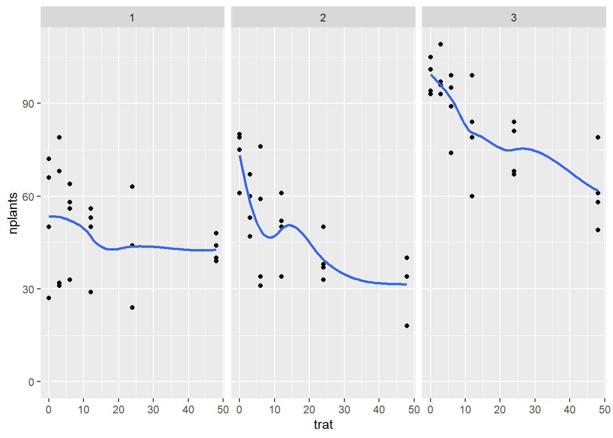
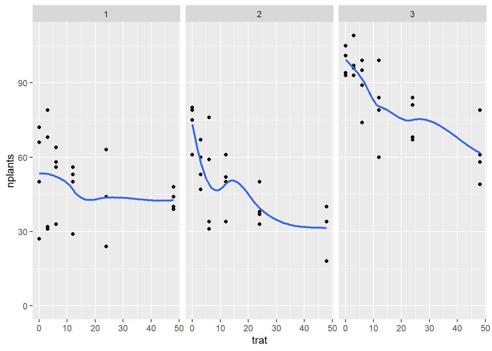
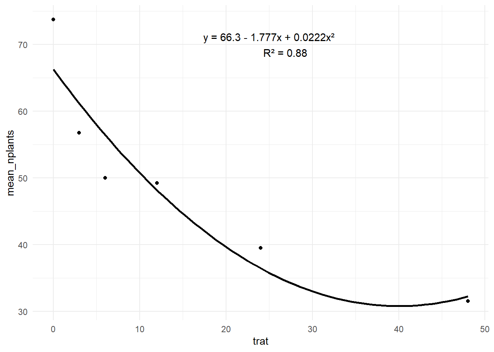
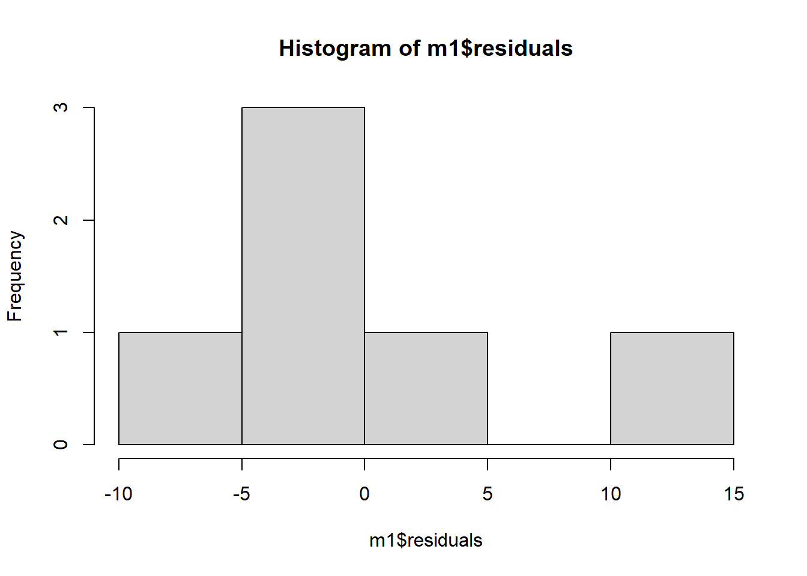
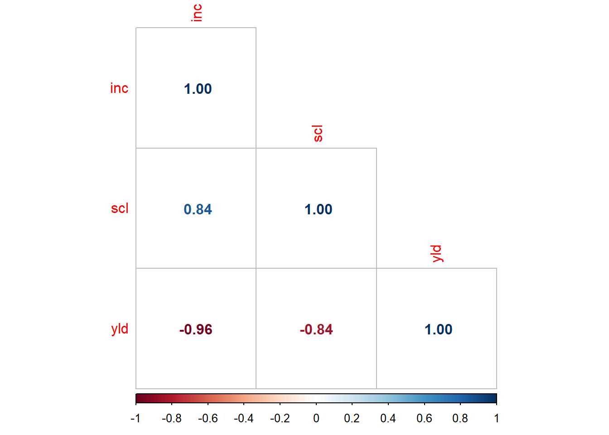
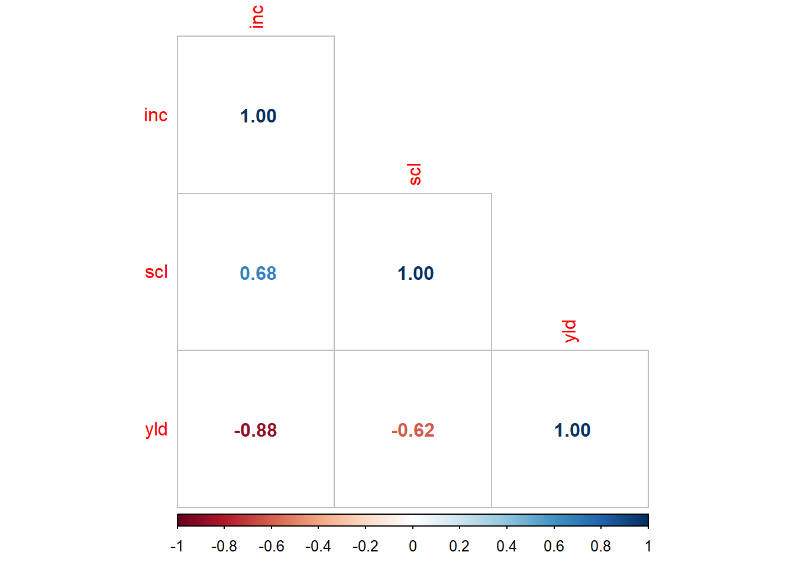

#
library(readxl)
library(tidyverse)
estande <- read_excel("dados-diversos.xlsx", "estande")
estande |>
ggplot(aes(trat, nplants, group = exp))+
geom_point()+
facet_wrap(~exp)+
ylim(0, max(estande$nplants))+
geom_smooth(se = F)
Aula 14
Com mais um parâmetro, quadrática
Nesse exemplo tem-se uma variável independente, que é um nível de um fator do experimento. Como é quantitativo, fazer regressão linear. Então, deve-se observar se é linear simples ou quadrática (nesse caso). Logo, usar o “lm”, verificar o ajuste, verificar os coeficientes, pegar a equação que vai predizer o valor de y para cada valor de x ou x², dependendo do modelo usado, que vai reportar os coeficientes de variação, o R².
Variável independente
#
library(readxl)
library(tidyverse)
estande <- read_excel("dados-diversos.xlsx", "estande")
estande |>
ggplot(aes(trat, nplants, group = exp))+
geom_point()+
facet_wrap(~exp)+
ylim(0, max(estande$nplants))+
geom_smooth(se = F)
estande2 <- estande |>
filter(exp ==2) |>
group_by(trat) |>
summarise(mean_nplants = mean(nplants))
estande2 |>
ggplot(aes(trat, mean_nplants))+
geom_point()+
#geom_line()+
geom_smooth(se = F, formula = y ~ poly(x, 2), method = "lm", color = "black")+
theme_minimal()+
annotate(geom = "text",
x = 25, y = 70,
label = "y = 66.3 - 1.777x + 0.0222x²
R² = 0.88")
# R² = coeficiente de determinação, 49 minutosestande2 <- estande2 |>
mutate(trat2 = trat^2)
m1 <- lm(mean_nplants ~ trat, data = estande2)
summary(m1)
Call:
lm(formula = mean_nplants ~ trat, data = estande2)
Residuals:
1 2 3 4 5 6
12.764 -2.134 -6.782 -3.327 -4.669 4.147
Coefficients:
Estimate Std. Error t value Pr(>|t|)
(Intercept) 60.9857 4.5505 13.402 0.000179 ***
trat -0.7007 0.2012 -3.483 0.025294 *
---
Signif. codes: 0 '***' 0.001 '**' 0.01 '*' 0.05 '.' 0.1 ' ' 1
Residual standard error: 8.117 on 4 degrees of freedom
Multiple R-squared: 0.752, Adjusted R-squared: 0.69
F-statistic: 12.13 on 1 and 4 DF, p-value: 0.02529# Adjusted R-squared: 0.69 = 69% de plantas é explicado pelo tratamento de acordo com o modelo linear.
# histograma dos resíduos
hist(m1$residuals)
m2 <- lm(mean_nplants ~ trat + trat2, data = estande2)
summary(m2)
Call:
lm(formula = mean_nplants ~ trat + trat2, data = estande2)
Residuals:
1 2 3 4 5 6
7.4484 -4.4200 -6.4386 1.0739 3.0474 -0.7111
Coefficients:
Estimate Std. Error t value Pr(>|t|)
(Intercept) 66.30156 4.70800 14.083 0.000776 ***
trat -1.77720 0.62263 -2.854 0.064878 .
trat2 0.02223 0.01242 1.790 0.171344
---
Signif. codes: 0 '***' 0.001 '**' 0.01 '*' 0.05 '.' 0.1 ' ' 1
Residual standard error: 6.517 on 3 degrees of freedom
Multiple R-squared: 0.8801, Adjusted R-squared: 0.8001
F-statistic: 11.01 on 2 and 3 DF, p-value: 0.04152AIC(m1, m2) df AIC
m1 3 45.72200
m2 4 43.36151Duas variáveis resposta do tipo númerica quantitativa. Para saber se há associação entre duas variáveis dependentes.
Primeiro, fazer análise para testar a associação. A análise de correlação dá o coeficiente de correlação de Pearson (R), que é a raiz do R², que será sempre maior que o R².
mofo <- read_excel("dados-diversos.xlsx", "mofo")
mofo |>
ggplot(aes(inc, yld))+
geom_point()+
facet_wrap(~study)+
geom_smooth(se = F, method = "lm")
mofo1 <- mofo |>
filter(study == 3)
mofo1# A tibble: 13 × 5
study treat inc scl yld
<dbl> <dbl> <dbl> <dbl> <dbl>
1 3 1 65 5013 2839
2 3 2 33 3619 3375
3 3 3 40 2325 3264
4 3 4 35 2588 3301
5 3 5 48 3969 3220
6 3 6 31 1556 3321
7 3 7 39 3175 3229
8 3 8 25 1763 3517
9 3 9 26 2894 3595
10 3 10 21 350 3702
11 3 11 23 419 3652
12 3 12 25 644 3608
13 3 13 33 2850 3334# Correlação linear resume (mensura) o grau de associação entre duas variáveis (x e y). Fornece um número que resume o grau de associação entre a duas variáveis. A análise de regressão indica o efeito de uma mudança da unidade na variável explicativa (x) em relação a variável resposta (y). Ela descreve o efeito, por meio de uma equação, da variável explicativa em relação a variável resposta.
# teste de correlação, de pearson, quando tem normalidade. Testar a associação. Quanto maior o cor, maior a associação. Quanto mais disperso os pontos, menor a associação.
cor.test(mofo1$inc, mofo1$yld)
Pearson's product-moment correlation
data: mofo1$inc and mofo1$yld
t = -10.9, df = 11, p-value = 3.105e-07
alternative hypothesis: true correlation is not equal to 0
95 percent confidence interval:
-0.9872663 -0.8579544
sample estimates:
cor
-0.956692 #função cor
pcor <- cor(mofo1 |> select(3:5))
library(corrplot)
corrplot (pcor, method = "number", type = "lower")
mofo1 <- mofo |>
filter(study == 3)
mofo1# A tibble: 13 × 5
study treat inc scl yld
<dbl> <dbl> <dbl> <dbl> <dbl>
1 3 1 65 5013 2839
2 3 2 33 3619 3375
3 3 3 40 2325 3264
4 3 4 35 2588 3301
5 3 5 48 3969 3220
6 3 6 31 1556 3321
7 3 7 39 3175 3229
8 3 8 25 1763 3517
9 3 9 26 2894 3595
10 3 10 21 350 3702
11 3 11 23 419 3652
12 3 12 25 644 3608
13 3 13 33 2850 3334#teste de normalidade
shapiro.test(mofo$inc)
Shapiro-Wilk normality test
data: mofo$inc
W = 0.94315, p-value = 0.01507# usar spearman (não paramétrica, quando não assume normalidade) quando falta de normalidade. Usar sperarman como padrão
cor.test(mofo1$inc, mofo1$yld, method = "spearman")
Spearman's rank correlation rho
data: mofo1$inc and mofo1$yld
S = 715.97, p-value = 7.166e-08
alternative hypothesis: true rho is not equal to 0
sample estimates:
rho
-0.9669458 #função cor
pcor <- cor(mofo1 |> select(3:5), method = "spearman")
library(corrplot)
corrplot (pcor, method = "number", type = "lower")mofo1 <- mofo |>
filter(study == 3)
mofo1# A tibble: 13 × 5
study treat inc scl yld
<dbl> <dbl> <dbl> <dbl> <dbl>
1 3 1 65 5013 2839
2 3 2 33 3619 3375
3 3 3 40 2325 3264
4 3 4 35 2588 3301
5 3 5 48 3969 3220
6 3 6 31 1556 3321
7 3 7 39 3175 3229
8 3 8 25 1763 3517
9 3 9 26 2894 3595
10 3 10 21 350 3702
11 3 11 23 419 3652
12 3 12 25 644 3608
13 3 13 33 2850 3334#teste de normalidade
shapiro.test(mofo$inc)
Shapiro-Wilk normality test
data: mofo$inc
W = 0.94315, p-value = 0.01507# usar kendall (não paramétrica, quando não assume normalidade) para dados (variável) ordinais
cor.test(mofo1$inc, mofo1$yld, method = "kendall")
Kendall's rank correlation tau
data: mofo1$inc and mofo1$yld
z = -4.1641, p-value = 3.125e-05
alternative hypothesis: true tau is not equal to 0
sample estimates:
tau
-0.8831914 #função cor
pcor <- cor(mofo1 |> select(3:5), method = "kendall")
library(corrplot)
corrplot (pcor, method = "number", type = "lower")